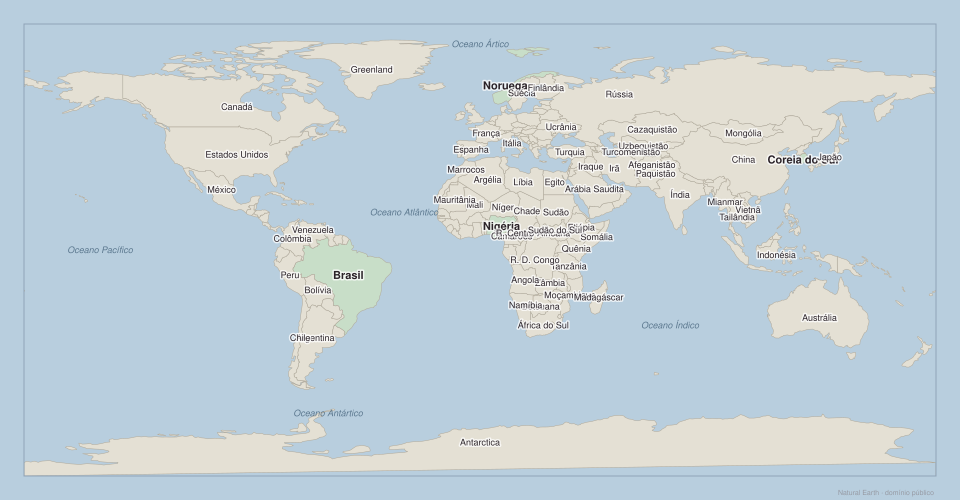
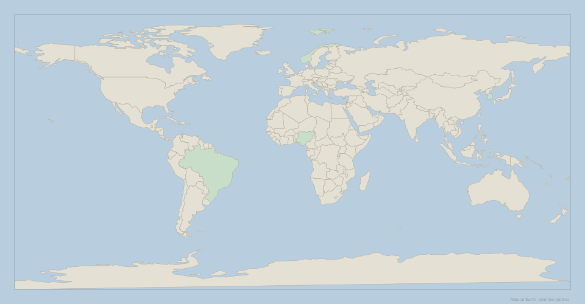
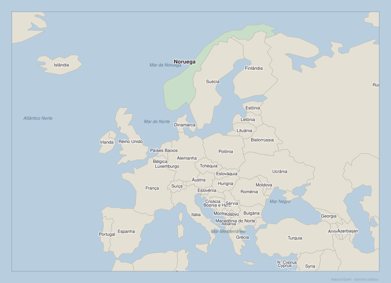
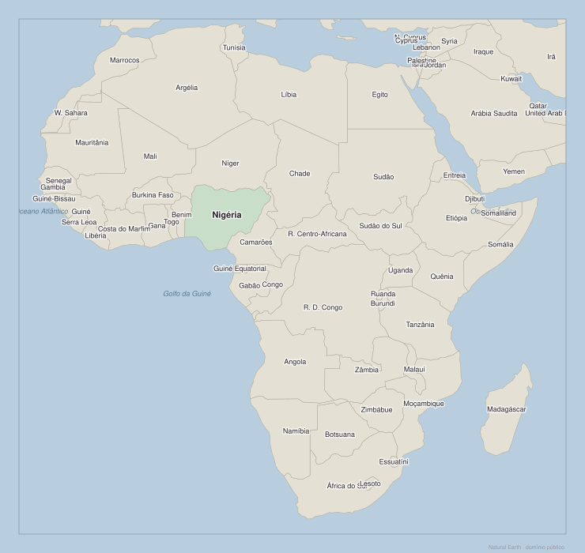
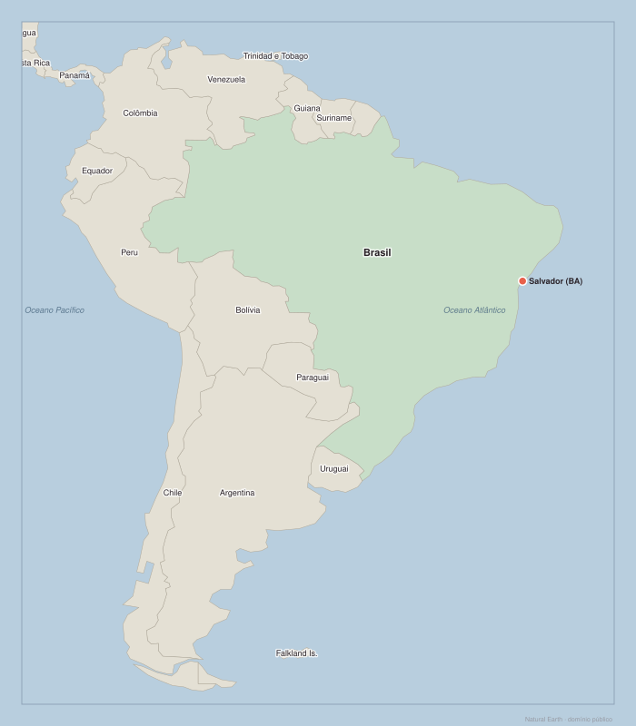

Por que existem países ricos e países pobres?
Casos de estudo: Brasil, Noruega, Coreia do Sul e Nigéria — 6 mapas para localizar, comparar e fazer perguntas melhores
Para que serve este Atlas
Este Atlas não existe para separar o mundo entre países "bons" e "ruins". Ele serve para localizar lugares, perceber distâncias, observar mares, fronteiras e rotas, e fazer perguntas mais precisas.
Um mapa pode mostrar que um país tem litoral, muitos vizinhos ou um território grande. Ele não mostra sozinho se há boas escolas, regras previsíveis, desigualdade, conflitos ou oportunidades para a maioria das pessoas. Por isso, o mapa é o início de uma investigação, não a resposta final.
Localizar não é explicar. A geografia cria facilidades e obstáculos, mas história, instituições, educação, infraestrutura e escolhas coletivas também participam da trajetória de um país.
Por que existem países ricos e países pobres?
Casos de estudo: Brasil, Noruega, Coreia do Sul e Nigéria. Use os mapas para localizar cada país, observar seus vizinhos e mares, e depois formular uma pergunta que o mapa sozinho não responde.

Onde estão os quatro casos desta semana? O que a posição geográfica de cada um permite observar?
Aponte no mapa: Brasil, Noruega, Coreia do Sul e Nigéria. Para cada um, diga em voz alta: continente e um oceano ou mar próximo.
Para cada um dos quatro países: cite um vizinho, um mar ou oceano próximo e uma rota comercial ou estratégica relevante. O que a posição geográfica sugere e o que ela não explica?

Sem consultar o mapa com nomes: conseguem apontar Brasil, Noruega, Coreia do Sul e Nigéria?
Aponte os quatro países no mapa mudo. Use continentes e oceanos como referência. Depois compare com o mapa com nomes para conferir.
Além dos quatro casos, localize também: China, Índia, Alemanha, Estados Unidos e Austrália. Corrija sem consultar antes de verificar.

Noruega: que mares a cercam? Quais países são vizinhos? O que essa posição no Atlântico Norte sugere sobre acesso a mercados?
Localize a Noruega e cite dois vizinhos e um mar próximo. Depois localize Alemanha, França e Reino Unido no mesmo mapa.
A Noruega tem costa no Atlântico Norte. Isso criou facilidades para comércio e acesso a mercados europeus. Que informação sobre a Noruega o mapa não consegue mostrar?

Nigéria: que acesso ao mar tem? Quais são seus vizinhos imediatos? Por que a posição no Golfo da Guiné importa para o comércio?
Localize a Nigéria e identifique: o mar ao sul, dois países vizinhos. Localize também Egito, África do Sul e Etiópia.
A Nigéria tem acesso ao Atlântico, grande população e petróleo. Que combinação de fatores o mapa permite ver? Que fatores explicativos ficam fora do mapa?

Coreia do Sul: que potências a cercam? Que posição ela ocupa na Península Coreana e no Leste Asiático?
Localize Coreia do Sul, Coreia do Norte, China e Japão. Identifique o mar entre a Coreia e o Japão.
A Coreia do Sul está entre China, Rússia e Japão, e tem a Coreia do Norte ao norte. Como essa posição influencia suas alianças e estratégia econômica? O que o mapa mostra e o que ele não mostra?

Brasil: extensa costa atlântica, fronteiras com quase todos os países da América do Sul. O que essa posição central sugere e o que ela não explica?
Localize Brasil, Argentina, Chile e Colômbia. Identifique o oceano a leste do Brasil e o oceano a oeste do Chile.
O Brasil tem território enorme, muitos vizinhos e costa atlântica. Quais vantagens geográficas isso representa? Que desvantagens logísticas e políticas o tamanho pode criar?
Comparar os quatro casos — Semana 1
Depois de observar os mapas, registrem suas respostas diretamente na ficha da Semana 1. A última coluna é obrigatória: ela impede que o mapa seja usado como explicação única.
Abrir ficha da Semana 1Ver respostas de referência (adulto)
Estas não são respostas únicas. Ajudam a conferir a localização básica.
| País | Exemplos de vizinhos ou mares | Possibilidade geográfica observável | Limite da leitura do mapa |
|---|---|---|---|
| Brasil | Argentina, Bolívia, Peru, Colômbia, Venezuela, oceano Atlântico | Costa extensa e ligação com quase todos os países da América do Sul | Não explica desigualdade, qualidade da escola ou capacidade de executar políticas públicas |
| Noruega | Suécia, Finlândia, Rússia, mar da Noruega, mar do Norte | Litoral voltado ao Atlântico Norte e proximidade de mercados europeus | Não explica como recursos e receitas foram administrados |
| Coreia do Sul | Coreia do Norte, China, Japão, mar Amarelo, mar do Japão | Proximidade de rotas e mercados do leste asiático | Não explica industrialização, educação ou conflitos políticos |
| Nigéria | Benim, Níger, Chade, Camarões, Golfo da Guiné | Acesso ao Atlântico por meio do Golfo da Guiné | Não explica distribuição da renda, instituições ou diversidade interna |
O que o mapa responde e o que ele não responde
| O mapa ajuda a responder | O mapa não responde sozinho |
|---|---|
| Onde fica um país? | Por que pessoas daquele país têm determinadas oportunidades? |
| Quais são seus vizinhos, mares e oceanos próximos? | Se a renda é bem distribuída? |
| Se tem litoral, território grande ou muitos vizinhos? | Se escolas, hospitais, leis e estradas funcionam bem? |
| Quais rotas ou distâncias podem importar? | Como a história, os conflitos e as decisões coletivas moldaram a sociedade? |
Escolham uma afirmação absoluta, como "país tropical é pobre" ou "petróleo deixa um país rico". Que informação do Atlas ajuda a testar a frase? Que informação precisa ser buscada fora do mapa?